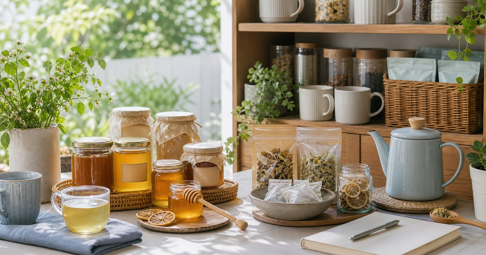

蜂蜜、草本飲與沖泡補給：日常飲品怎麼選得舒服不誇張
日常飲品可以先從口味、沖泡方式、保存和飲用時段整理，不必把每一杯都寫成保健答案。

日常飲品最適合回到很樸素的問題：什麼時候喝、怎麼沖、能放多久、家裡誰會喝。蜂蜜、草本飲、沖泡補給和機能風味飲品都可以成為茶水櫃的一部分，但它們不需要被說成神奇答案。選得舒服，先從口味和動線開始。
先把飲品分成早晨、午後與晚間
早晨飲品重視準備速度和口味穩定，午後飲品重視能否取代手搖或零食衝動，晚間飲品則要避免讓自己在睡前喝得太甜或太刺激。時段一分清楚，採買就不會變成什麼都想試。
家庭茶水櫃也可以分區：蜂蜜和沖泡飲放早餐區，草本茶和無咖啡因飲品放晚間區，辦公室補貨則放小包裝或容易分食的品項。
本文不宣稱保健、代謝、改善或療效；任何草本、酵素或機能風味品項，都只放在一般飲用情境裡討論。
如果家裡已經有咖啡、茶包和即溶飲，新增品項前先清點一次。很多飲品不是不好喝，而是被放到櫃子深處後就被忘記；看得見、拿得到，才比較可能被喝完。
也可以替每個時段只保留一個主要選項。早晨一種、午後一種、晚間一種，喝完再換口味，會比同時開五六種更容易維持新鮮與整潔。
- 早晨：準備快、口味穩。
- 午後：好沖泡、好保存。
- 晚間：留意甜度與咖啡因。
蜂蜜先看用途，不先看形容詞
三代養蜂場和 BBHONEY 可以從蜂蜜、早餐搭配、料理應用與伴手禮方向參考。選蜂蜜前先想用途：抹麵包、拌優格、搭茶、料理調味，還是送禮。
用途不同，包裝大小和風味濃度也不同。辦公室或小家庭不一定適合一開始買大罐；送禮則要看保存、包裝和對方是否常用。蜂蜜不需要被寫成保健品，清楚說明風味與搭配就夠。
若家中有幼兒、特殊飲食需求或過敏疑慮，請依商品標示與專業建議判斷。食品資訊請以商品頁公告為準。
蜂蜜也適合被當成料理配角，而不是每天固定任務。少量加入醬汁、麵包、茶或甜點，比要求自己天天沖一杯更接近日常，也比較不會造成壓力。
Elite 嚴選
草本與沖泡飲要先看保存和沖泡難度
本草養生 From Nature、清涼酵素和水魔素 m+ 可以放在草本飲、沖泡飲、日常補給和風味飲品脈絡比較。選購時不要先看宣傳感強的字眼，先看成分標示、沖泡方式、甜度、保存和飲用限制。
如果一款飲品需要複雜步驟，很可能只會在剛買時被使用。辦公室和家庭補貨更適合選擇好沖泡、好分裝、保存清楚的品項。
機能名稱不等於個人化建議。若你有疾病、用藥、懷孕、哺乳、特殊飲食或身體不適，請先詢問合格醫療或營養專業人員。
選購時也要留意甜味來源和飲用份量。有些沖泡飲看起來輕巧，實際上可能更適合偶爾喝；把它放在午後點心情境，而不是水的替代品，會比較保守。
- 先看成分與甜度。
- 確認沖泡方式與保存條件。
- 有健康狀況時先問專業人員。
辦公室茶水角落要避免過度囤貨
辦公室飲品最容易被買成一整櫃，但真正被喝完的通常只有幾種。建議先用小包裝測試口味，再留下大家真的會喝的品項。
共用茶水角落也要標示開封日期。茶包、粉包、蜂蜜和沖泡飲若開封後長期放置，容易忘記保存條件。標示清楚，比買更多選項更實用。
如果你只是想減少手搖頻率，可以先準備一種無糖茶、一種蜂蜜或風味飲、一種晚間飲品，不必一次建立完整飲品櫃。
茶水角落的容器也要簡單。透明盒、開封日期和少量分類，比漂亮但看不清內容物的盒子更有用；當你知道還剩什麼，就比較不會重複下單。
讓飲品成為生活節點，不是心理負擔
一杯飲品最好的功能，可能只是讓你在會議之間停十秒、離開螢幕、重新倒一杯水。它不需要承擔過多健康想像，也不需要每天都被喝得很有儀式感。
下單前請回到商品頁確認成分、甜度、保存方式與即時販售資訊。若涉及草本、酵素、保健或特殊飲食，請用保守語氣看待，並依個人狀況判斷。
茶水櫃維持少量、清楚、會被喝完，就已經比塞滿流行飲品更接近日常。
每個月清一次茶水櫃，移除過期、受潮或家人不喜歡的品項，會讓下一次補貨更準。這種維護比追新口味更樸素，但更能讓飲品回到生活裡。
同主題品牌參考
FAQ
蜂蜜和草本飲可以寫保健效果嗎？
本文不做保健、改善、代謝或療效宣稱，只以口味、搭配、沖泡、保存和日常飲用情境討論。
辦公室飲品應該怎麼補貨？
先從小包裝和少數品項開始，觀察哪些真的會被喝完，再固定補貨。建議標示開封日期和保存方式，避免過度囤貨。
有健康狀況或正在用藥可以喝草本飲嗎？
本文不能提供個人化建議。若有疾病、用藥、懷孕、哺乳、特殊飲食或身體不適，請先諮詢合格醫療或營養專業人員。
下一步建議
先分出早晨、午後與晚間飲品，再依口味、保存與沖泡方式挑蜂蜜和草本飲。
重要警語
本文為一般飲品與生活補貨參考，不構成醫療、營養、保健或個人化建議；成分、甜度、保存與即時販售資訊請以商品頁公告為準。
本文含品牌／商品導購連結；若你透過部分商品連結前往選購，Elite Fashion 可能取得合作收益。本文仍以編輯判斷與使用情境整理為主，價格、規格、活動與庫存請以商品頁公告為準。